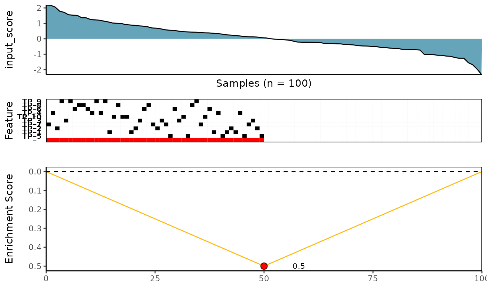

The CaDrA package currently supports four scoring functions to search for subsets of genomic features that are likely associated with a specific outcome of interest (e.g., protein expression, pathway activity, etc.)
- Kolmogorov-Smirnov Method (
ks) - Conditional Mutual Information Method (
revealer) - Wilcoxon Rank-Sum Method (
wilcox) - Custom - An User’s Provided Scoring Function
(
custom)
Below, we run candidate_search() over the top 3 starting
features using each of the four scoring functions described above.
Important Note:
- The legacy/deprecated function
topn_eval()is equivalent to the new and recommendedcandidate_search()function
Load required datasets
- A
binary features matrixalso known asFeature Set(such as somatic mutations, copy number alterations, chromosomal translocations, etc.) The 1/0 row vectors indicate the presence/absence of ‘omics’ features in the samples. TheFeature Setcan be a matrix or an object of class SummarizedExperiment from SummarizedExperiment package) - A vector of continuous scores (or
Input Scores) representing a functional response of interest (such as protein expression, pathway activity, etc.)
Heatmap of simulated feature set
The simulated dataset, sim_FS, comprises of 1000 genomic
features and 100 sample profiles. There are 10 left-skewed (i.e. True
Positive or TP) and 990 uniformly-distributed (i.e. True Null or TN)
features simulated in the dataset. Below is a heatmap of the first 100
features.
mat <- SummarizedExperiment::assay(sim_FS)
pheatmap::pheatmap(mat[1:100, ], color = c("white", "red"), cluster_rows = FALSE, cluster_cols = FALSE)
Search for a subset of genomic features that are likely associated with a functional response of interest using four scoring methods
1. Kolmogorov-Smirnov scoring method
See ?ks_rowscore for more details
ks_topn_l <- CaDrA::candidate_search(
FS = sim_FS,
input_score = sim_Scores,
method = "ks_pval", # Use Kolmogorow-Smirnow scoring function
weights = NULL, # If weights is provided, perform a weighted-KS test
alternative = "less", # Use one-sided hypothesis testing
search_method = "both", # Apply both forward and backward search
top_N = 3, # Evaluate top 3 starting points for the search
max_size = 10, # Allow at most 10 features in meta-feature matrix
do_plot = FALSE, # We will plot it AFTER finding the best hits
best_score_only = FALSE # Return meta-feature, its observed input scores and corresponding best score
)
# Now we can fetch the feature set of top N features that corresponded to the best scores over the top N search
ks_topn_best_meta <- topn_best(ks_topn_l)
# Visualize best meta-feature result
meta_plot(topn_best_list = ks_topn_best_meta)
2. Wilcoxon Rank-Sum scoring method
See ?wilcox_rowscore for more details
wilcox_topn_l <- CaDrA::candidate_search(
FS = sim_FS,
input_score = sim_Scores,
method = "wilcox_pval", # Use Wilcoxon Rank-Sum scoring function
alternative = "less", # Use one-sided hypothesis testing
search_method = "both", # Apply both forward and backward search
top_N = 3, # Evaluate top 3 starting points for the search
max_size = 10, # Allow at most 10 features in meta-feature matrix
do_plot = FALSE, # We will plot it AFTER finding the best hits
best_score_only = FALSE # Return meta-feature, its observed input scores and corresponding best score
)
# Now we can fetch the feature set of top N feature that corresponded to the best scores over the top N search
wilcox_topn_best_meta <- topn_best(topn_list = wilcox_topn_l)
# Visualize best meta-feature result
meta_plot(topn_best_list = wilcox_topn_best_meta)
3. Conditional Mutual Information scoring method
See ?revealer_rowscore for more details
revealer_topn_l <- CaDrA::candidate_search(
FS = sim_FS,
input_score = sim_Scores,
method = "revealer", # Use REVEALER's CMI scoring function
search_method = "both", # Apply both forward and backward search
top_N = 3, # Evaluate top 3 starting points for the search
max_size = 10, # Allow at most 10 features in meta-feature matrix
do_plot = FALSE, # We will plot it AFTER finding the best hits
best_score_only = FALSE # Return meta-feature, its observed input scores and corresponding best score
)
# Now we can fetch the ESet of top feature that corresponded to the best scores over the top N search
revealer_topn_best_meta <- topn_best(topn_list = revealer_topn_l)
# Visualize best meta-feature result
meta_plot(topn_best_list = revealer_topn_best_meta)
4. Custom - An user’s provided scoring method
See ?custom_rowscore for more details
# A customized function using ks-test function
customized_ks_rowscore <- function(FS, input_score, meta_feature=NULL, alternative="less", metric="pval"){
# Check if meta_feature is provided
if(!is.null(meta_feature)){
# Getting the position of the known meta features
locs <- match(meta_feature, row.names(FS))
# Taking the union across the known meta features
if(length(meta_feature) > 1) {
meta_vector <- as.numeric(ifelse(colSums(FS[meta_feature,]) == 0, 0, 1))
}else{
meta_vector <- as.numeric(FS[meta_feature,])
}
# Remove the meta features from the binary feature matrix
# and taking logical OR btw the remaining features with the meta vector
FS <- base::sweep(FS[-locs, , drop=FALSE], 2, meta_vector, `|`)*1
# Check if there are any features that are all 1s generated from
# taking the union between the matrix
# We cannot compute statistics for such features and thus they need
# to be filtered out
if(any(rowSums(FS) == ncol(FS))){
warning("Features with all 1s generated from taking the matrix union ",
"will be removed before progressing...\n")
FS <- FS[rowSums(FS) != ncol(FS), , drop=FALSE]
}
}
# KS is a ranked-based method
# So we need to sort input_score from highest to lowest values
input_score <- sort(input_score, decreasing=TRUE)
# Re-order the matrix based on the order of input_score
FS <- FS[, names(input_score), drop=FALSE]
# Compute the scores using the KS method
ks <- apply(FS, 1, function(r){
x = input_score[which(r==1)];
y = input_score[which(r==0)];
res <- ks.test(x, y, alternative=alternative)
return(c(res$statistic, res$p.value))
})
# Obtain score statistics
stat <- ks[1,]
# Obtain p-values and change values of 0 to the machine lowest value
# to avoid taking -log(0)
pval <- ks[2,]
pval[which(pval == 0)] <- .Machine$double.xmin
# Compute the -log(pval)
# Make sure scores has names that match the row names of FS object
pval <- -log(pval)
# Determine which metric to returned the scores
if(metric == "pval"){
scores <- pval
}else{
scores <- stat
}
names(scores) <- rownames(FS)
return(scores)
}
# Search for best features using a custom-defined function
custom_topn_l <- CaDrA::candidate_search(
FS = SummarizedExperiment::assay(sim_FS),
input_score = sim_Scores,
method = "custom", # Use custom scoring function
custom_function = customized_ks_rowscore, # Use a customized scoring function
custom_parameters = NULL, # Additional parameters to pass to custom_function
search_method = "both", # Apply both forward and backward search
top_N = 3, # Evaluate top 3 starting points for the search
max_size = 10, # Allow at most 10 features in meta-feature matrix
do_plot = FALSE, # We will plot it AFTER finding the best hits
best_score_only = FALSE # Return meta-feature, its observed input scores and corresponding best score
)
# Now we can fetch the feature set of top N feature that corresponded to the best scores over the top N search
custom_topn_best_meta <- topn_best(topn_list = custom_topn_l)
# Visualize best meta-feature result
meta_plot(topn_best_list = custom_topn_best_meta)
SessionInfo
sessionInfo()
R version 4.3.1 (2023-06-16)
Platform: x86_64-pc-linux-gnu (64-bit)
Running under: Ubuntu 22.04.3 LTS
Matrix products: default
BLAS: /usr/lib/x86_64-linux-gnu/openblas-pthread/libblas.so.3
LAPACK: /usr/lib/x86_64-linux-gnu/openblas-pthread/libopenblasp-r0.3.20.so; LAPACK version 3.10.0
locale:
[1] LC_CTYPE=C.UTF-8 LC_NUMERIC=C LC_TIME=C.UTF-8
[4] LC_COLLATE=C.UTF-8 LC_MONETARY=C.UTF-8 LC_MESSAGES=C.UTF-8
[7] LC_PAPER=C.UTF-8 LC_NAME=C LC_ADDRESS=C
[10] LC_TELEPHONE=C LC_MEASUREMENT=C.UTF-8 LC_IDENTIFICATION=C
time zone: UTC
tzcode source: system (glibc)
attached base packages:
[1] stats4 stats graphics grDevices utils datasets methods
[8] base
other attached packages:
[1] CaDrA_0.99.7 testthat_3.1.10
[3] devtools_2.4.5 usethis_2.2.2
[5] pheatmap_1.0.12 SummarizedExperiment_1.30.2
[7] Biobase_2.60.0 GenomicRanges_1.52.0
[9] GenomeInfoDb_1.36.3 IRanges_2.34.1
[11] S4Vectors_0.38.1 BiocGenerics_0.46.0
[13] MatrixGenerics_1.12.3 matrixStats_1.0.0
[15] BiocStyle_2.28.1
loaded via a namespace (and not attached):
[1] bitops_1.0-7 tcltk_4.3.1 remotes_2.4.2.1
[4] rlang_1.1.1 magrittr_2.0.3 compiler_4.3.1
[7] reshape2_1.4.4 systemfonts_1.0.4 callr_3.7.3
[10] vctrs_0.6.3 stringr_1.5.0 profvis_0.3.8
[13] pkgconfig_2.0.3 crayon_1.5.2 fastmap_1.1.1
[16] XVector_0.40.0 ellipsis_0.3.2 labeling_0.4.3
[19] caTools_1.18.2 utf8_1.2.3 promises_1.2.1
[22] rmarkdown_2.24 sessioninfo_1.2.2 ps_1.7.5
[25] ragg_1.2.5 purrr_1.0.2 xfun_0.40
[28] zlibbioc_1.46.0 cachem_1.0.8 jsonlite_1.8.7
[31] later_1.3.1 DelayedArray_0.26.7 parallel_4.3.1
[34] prettyunits_1.1.1 R6_2.5.1 bslib_0.5.1
[37] stringi_1.7.12 RColorBrewer_1.1-3 pkgload_1.3.2.1
[40] brio_1.1.3 jquerylib_0.1.4 Rcpp_1.0.11
[43] bookdown_0.35 iterators_1.0.14 knitr_1.44
[46] R.utils_2.12.2 R.cache_0.16.0 httpuv_1.6.11
[49] Matrix_1.5-4.1 rstudioapi_0.15.0 abind_1.4-5
[52] yaml_2.3.7 doParallel_1.0.17 gplots_3.1.3
[55] codetools_0.2-19 miniUI_0.1.1.1 misc3d_0.9-1
[58] processx_3.8.2 pkgbuild_1.4.2 plyr_1.8.8
[61] lattice_0.21-8 tibble_3.2.1 shiny_1.7.5
[64] withr_2.5.0 evaluate_0.21 desc_1.4.2
[67] urlchecker_1.0.1 pillar_1.9.0 BiocManager_1.30.22
[70] KernSmooth_2.23-21 foreach_1.5.2 rprojroot_2.0.3
[73] RCurl_1.98-1.12 ggplot2_3.4.3 munsell_0.5.0
[76] scales_1.2.1 gtools_3.9.4 xtable_1.8-4
[79] glue_1.6.2 ppcor_1.1 tools_4.3.1
[82] fs_1.6.3 grid_4.3.1 colorspace_2.1-0
[85] GenomeInfoDbData_1.2.10 cli_3.6.1 textshaping_0.3.6
[88] fansi_1.0.4 S4Arrays_1.0.6 gtable_0.3.4
[91] R.methodsS3_1.8.2 sass_0.4.7 digest_0.6.33
[94] farver_2.1.1 htmlwidgets_1.6.2 R.oo_1.25.0
[97] memoise_2.0.1 htmltools_0.5.6 pkgdown_2.0.7
[100] lifecycle_1.0.3 mime_0.12 MASS_7.3-60